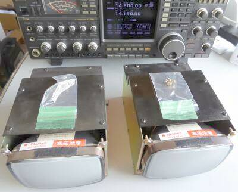
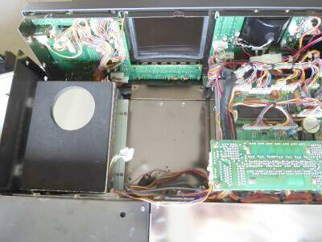
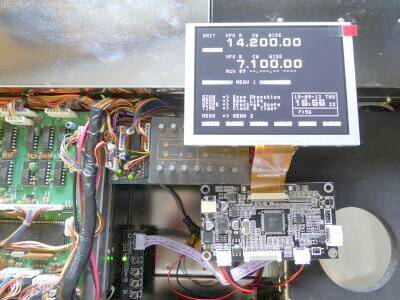
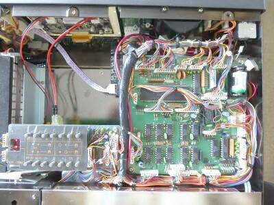
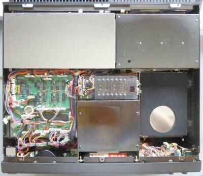
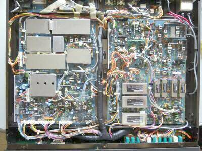
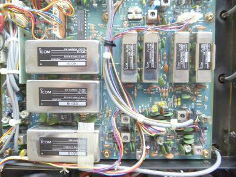
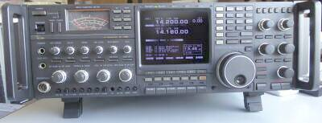
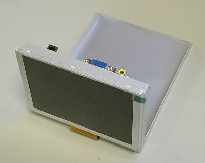
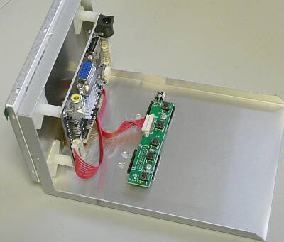

 |
昨今のフラットなディスプレイ表示を見慣れていると、湾曲したＣＲＴの表示には抵抗があります
ついＬＣＤに交換したくなります
結果として、ＩＣ－Ｒ９０００と合わせ、２つのＣＲＴユニットが残ってしまいました
このユニットですが、重量が１．７Ｋｇ強ありますので、取り外すことで、結果としてそれなりな軽量化が図れます
ＩＣ－Ｒ９０００の時は、海外より直接ＬＣＤ／ＶＧＡユニットを入手しましたが、今回はＡｍａｚｏｎＪａｐａｎで入手しました
３０％くらいコストアップはしましたが、簡単に５日くらいで手元に届きました（海外発送） |
 |
ＣＲＴユニットを取り外したところです |
 |
ＣＲＴユニットを取り外し、ＬＣＤ／ＶＧＡユニットを仮付けしてテストをしているところです
いい感じです |

ＣＲＴユニットを外すことで軽量化に！
ＬＣＤユニットは、ＣＲＴカバーに糊付け
右やや上部には、塩化チオニルリチウム電池 |
ＬＣＤ／ＶＧＡユニットを取り付けた状態です
電源は、既設の６Ｐハウジング・コネクタに合うピンを２本用意して差し込んでいるだけ
ビデオ信号は、ＲＣＡコネクタそのまま接続できます
信号切り替／調整サブボードは、ＣＲＴユニットを固定していたビス穴にスペーサを取り付けてそこに固定
送信パワー設定ボード（筐体上ケース窓を開けて調整できる位置に取り付けられている）は、はやりＣＲＴユニット固定穴に手持ちスペーサ３本で高さを調整して固定しました
本来４点で止まっているものを２点止めですので多少ぐらつきは生じますが、実用上全く問題は感じません
クロック用バックアップ電池は、当然劣化していましたので、この際リチウムボタン電池そのままではなく、音声合成ボードオプションの位置に電池ホルダを両面テープで張り付け、１２００ｍＡｈの塩化チオニルリチウム電池を内臓しました
３．６Ｖですので、直列にダイオードを入れて、減圧しています |
 |
上カバーを外した状態です
この状態は、オリジナル
中央下にＣＲＴユニットが搭載されています（高圧注意のラベルが見えます）
クロック・バックアップ電池も、リチウムボタン電池（０．５Ｖも出ていない）のままです
右下の丸く見えるところは、内臓スピーカーのお尻の部分です
上左が，ＲＦユニット 同右がフィルタ（チューナ）ユニット |
 |
下カバーを外した状態です
右側がＩＦユニットで、左側がメインユニット
|
 |
ＩＦフィルター部のアップ
このモデルは、フル装備・・・さすが、最上位機種です
この組み合わせで
ＳＳＢ ２．４ＫＨｚ
ＣＷ ５００Ｈｚ、２５０Ｈｚ
ＡＭ ２．４ＫＨｚ、６ＫＨｚ
ＦＭ １５ＫＨｚ
いずれもー６ｄｂ
の選択度を得ます |
 |
標準添付のラックマウント金具を取り付けるとこんな感じになります |
今回入手できたものは９２年製のようで、保存状態もよく、電気的な動作もスペックを満足する状態でした
製造から３０年近くが経過したモデルなのですが・・・ |
| |
| 余談ながら、本機はＪＡＲＤ新スプリアス確認保証可能機器リストに掲載があります（定格を見ても、スプリアス発射強度ー６０ｄＢ以下と記載があります） |
|
自身の所有ということで、ＬＣＤの取り付けを横着していた上記置換
友人からの置換依頼があった際、４：３のLCDが入手できたこともあり、きちんとした取り付けを行いました
取付加工したシャーシを本体にビス止めです
ＤＣ１２ＶとＮＴＳＣビデオ信号の線は、延長です |

最近では珍しくなった ５” ４：３ ＬＣＤ |
 |
ＣＲＴ同様に、別シャーシ（筐体）を用意しました
本体取付位置調整は少々面倒 |
ＬＣＤの調整ですが、本体上蓋を外せば
手動、あるいは赤外線リモコンで可能です |
| |
2025.09 |
|